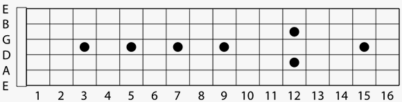

Fingers, Frets & Strings
In this tutorial we will know about how to cound finger, how to count frets, how to count strings and how to execute them all together. Okay lets talk about these.
Finger

At first you have to know the numbering of your finger-
- Thumb: null
- Index finger: 1
- Middle finger: 2
- Ring finger: 3
- Pinky finger: 4
Now you have to know the initial placement of your finger-
Thumb: Back of the neck in short! The proper placement of your thumb should be just opposite to your index finger or middle finger. Your thumb should not be pointed to the headstock or any other direction that will hurt you. Proper direction is upward direction. One thing is that your thumb should not wrap up the neck so tightly. Just hold with natural force. Thus the thumb provides you good control over the movement of your other finger.
Then other four fingers is to press the string. You might practice finger stretching exercises for flexibility of your playing fingers that is essential for playing guitar. And you should know which finger position is better for learning chord, chord changing and finger pricking.
Frets
Frets are the metal strips present all over the fingerboard along the width. You should know how to count the frets to play guitar properly. Because without knowing fret numbering you can’t locate the position, where should be your fingers placed. The numbering of your fret board starts from the headstock to body direction. So the first fret is the nearest fret from the headstock/nut and then counts up from there.
Strings

You may thing the thickest string is the first fret but it’s totally wrong. It may seem that it is the closest string from you so definitely this is the first string. Okay let me tell you that numbering the strings starts from the floor. So the first string is the lower string or the thinnest string. And the last or 6th string is the upper thickest string.
Oh! By the way there is specific name for these strings.
- 1st string- E
- 2nd string- A
- 3rd string- D
- 4th string- G
- 5th string- B
- 6th string- e
So you can remember strings by name or by the number. All are ok.
Combination of all together
If someone tell you to place your finger on 4th fret 4th string, you would go to the 4th fret from nut and place your finger right behind the 4th fret and definitely on 4th string. So what are you doing is that just counting the fret and string number and place the finger on right place.
Now you have to learn how to find right position in short time. That’s why you have to practice more and more to do better in this numbering system. And obviously you have to place right finger on right place at least you have to find the most comfortable way for you. Just exercise in right way and play tabs and chords more and more. Don’t worry I will discuss all these things in upcoming tutorials. Just follow my tutorial step by step.
All these things will definitely help you in long term journey with guitar. These will help you in quick learning of any lesson and thus you will give your progress a lot more pace.
Go to the next lesson: Few finger excercises